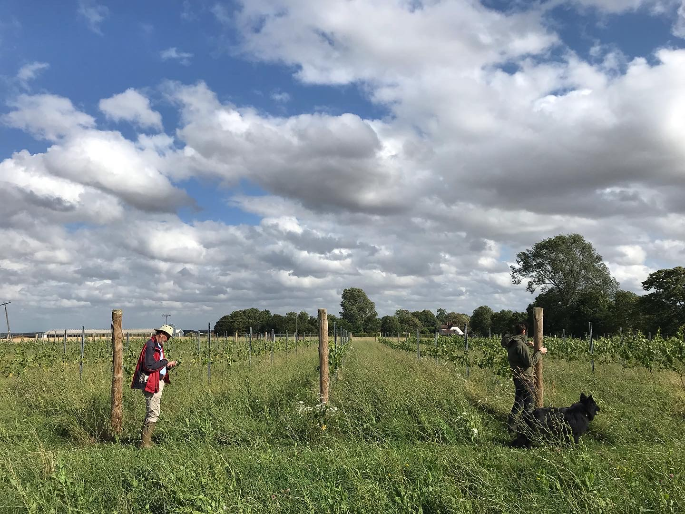
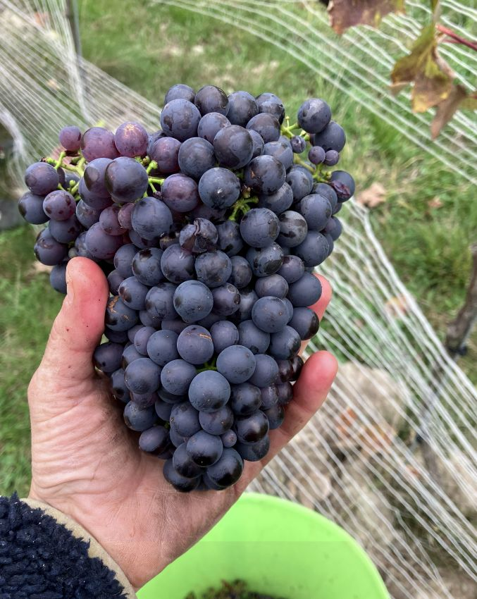
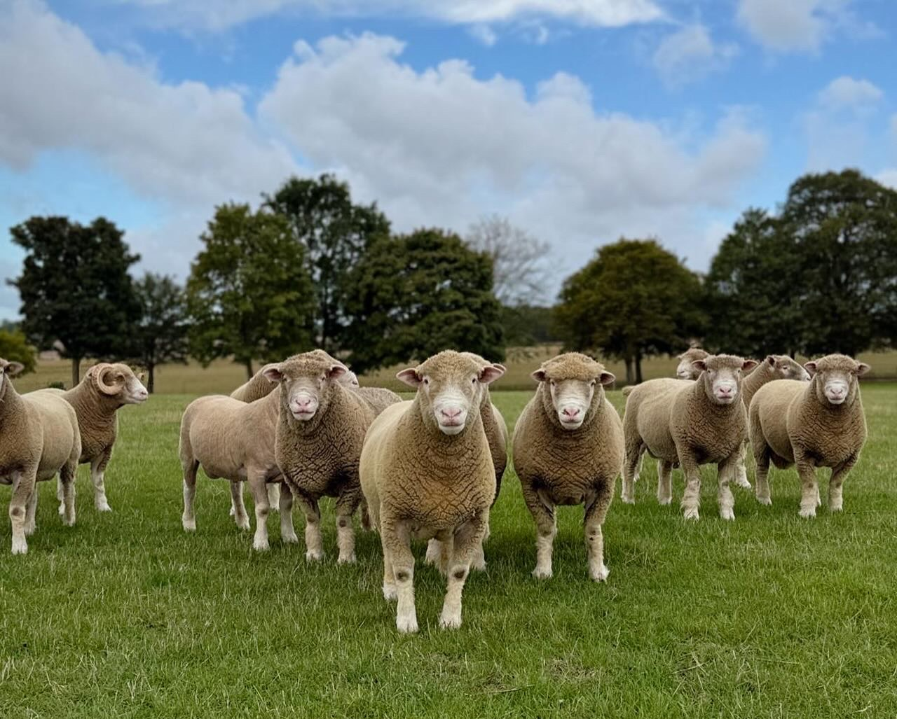
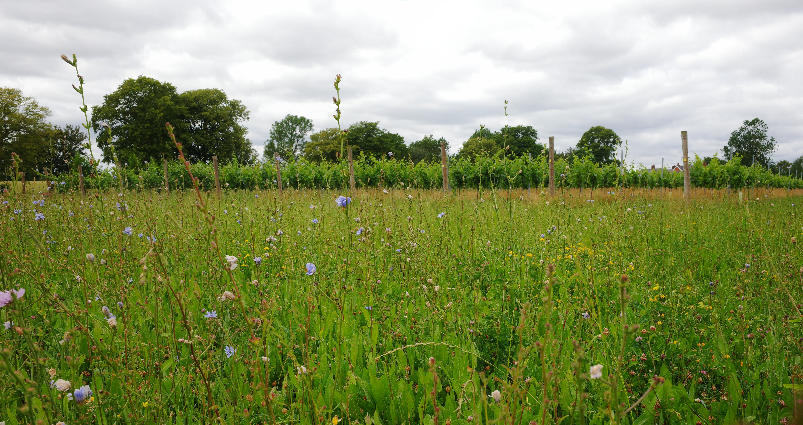
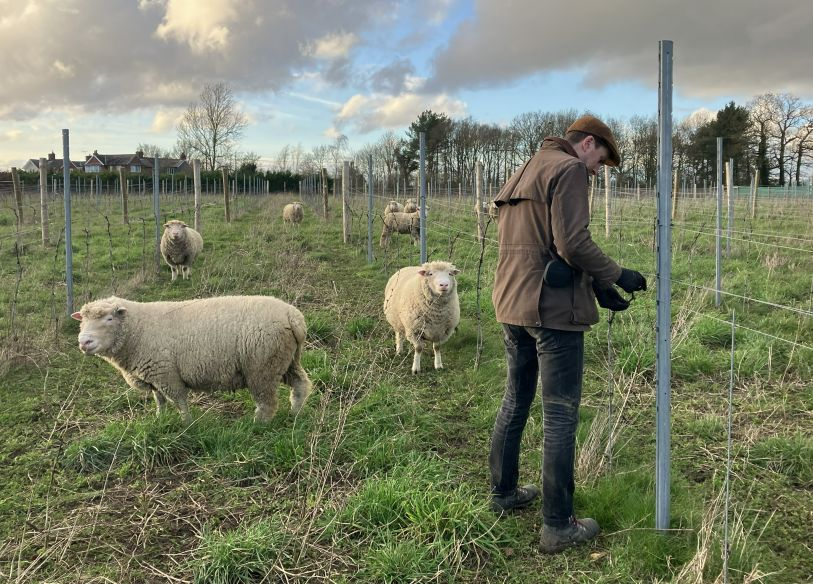
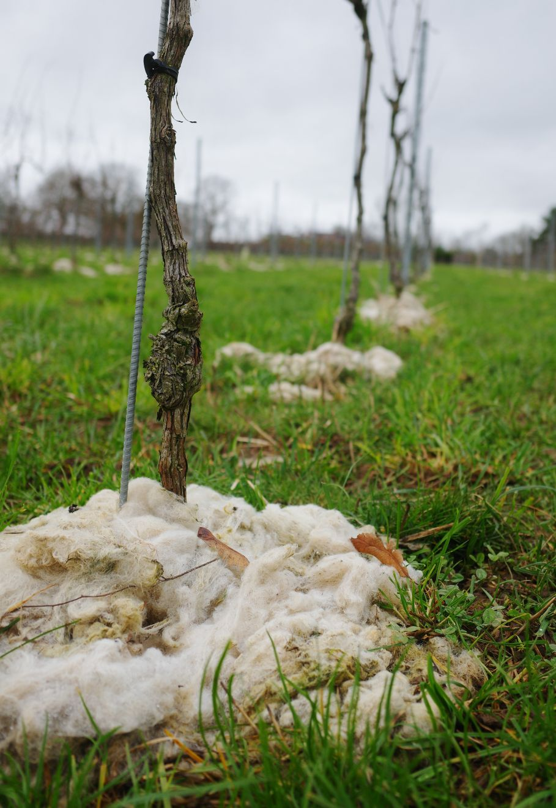

Lark Vineyard is truly a micro-vineyard, consisting of only 2,200 vines spread across about 1 acre. When we established the vineyard, we planted 17 different varieties with the aim of determining which grape varieties are the best fit for our terroir and personal tastes.
The long-term goal is to expand the area of plantings but at the same time reduce the total number of varieties to use only those that we feel are best suited.


The vines planted are a mix new and old varieties that we felt could be a good match for our cooler climate in the UK.
Traditional varieties: Chardonnay, Pinot Noir, Pinot Meunier, Pinot Blanc, Pinot Gris, Gamay, Auxerrois, Poulsard, Pineau d'Aunis, Muscato Giallo
Older hybrids: Bacchus, Ortega
Modern PIWIs: Solaris, Cabernet Noir, Regent, Syvat Blanc, Divico


We are particularly committed to building a balanced ecosystem and fostering healthy biodiversity both above and below the surface in the vineyard.
We don't use herbicides or cultivate, instead we maintain a permanent cover using a diverse mixture of wild flowers and herbs. This is tamed with occasional mowing by machine or by a few of our resident Dorset sheep. The latter provide organic matter, in the form of droppings and wool, that help to promote healthy soil.
Although not certified, we strive to use only organic treatments in the vineyard.

